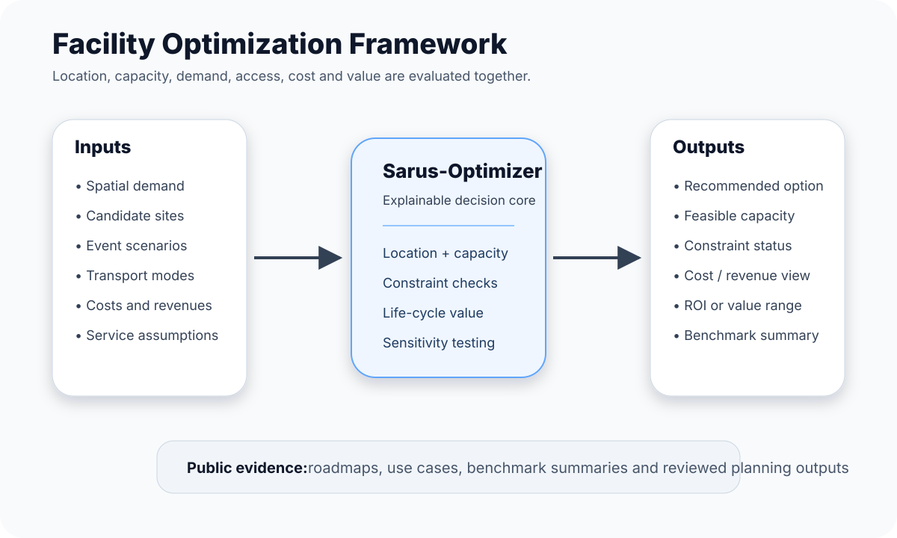

Sarus-Optimizer
Public roadmap, use cases, case narratives and benchmark-summary approach for explainable facility, transport, capacity and ROI optimization.
Open GitHub repository Read the vision
Case narratives
Airport-transit hub planning case
Public narratives explain the planning questions without exposing source code.
Status
Sarus-Optimizer is in private development. This site publishes public-facing documentation only.
No final numerical benchmark claims are currently published.
Optimize location and capacity together
Facility size and location are treated as connected decisions.
Treat access as a constraint
Walking, transit, roads, parking and station capacity can limit feasible demand.
Publish evidence, not code
Public material focuses on roadmap, use cases, case narratives and reviewed summaries.